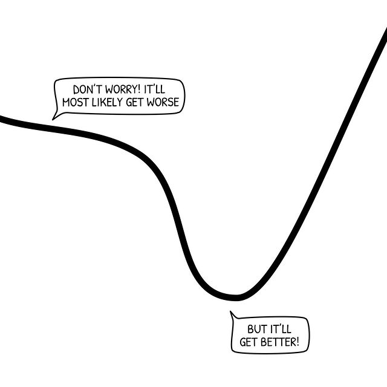
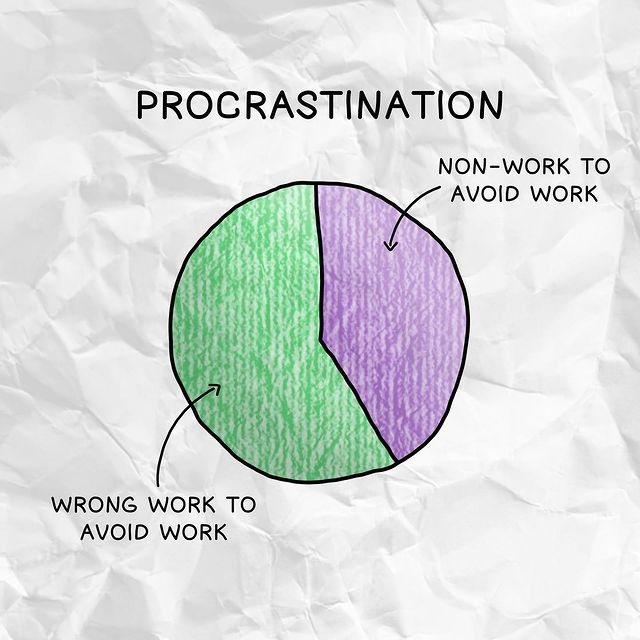
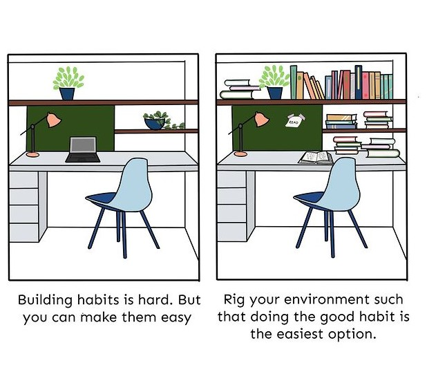

Consistency is the key
In my previous blog The key to success i told consistency is one of the most difficult thing to achieve in the process of reaching your goal. In this blog I will share some hacks to become consistent and the mistakes made by people in the journey of becoming consistent. For all those if you don’t know being consistent basically means doing something regularly until you see results in your life. For example if you have started hitting the gym today , you won’t see results until 3-4 months. Any new skill you want to master takes time and you have to be consistent to get to the master level. But practicing a skill you want to learn for 3 months straight is not an easy task for anybody. So here are some mistakes everybody does in their journey with tips on how you can avoid them.
Giving up so easily
I started posting on Instagram last year, my niche was technology. When I started posting I thought I could get to a thousand followers easily in a month. After posting for a few weeks I lost interest in it. I got 25 followers and made around 45 posts. Everybody do this mistake of giving up so easily only because it starts to get tough. I follow another technology related page on Instagram and it got 125k followers in a 2 months. This is what happens when you are consistent enough. Things get harder and harder day by day but never give up. One easy trick is to fall in love with the process. If you are planning to go the gym you have to fall in love with lifting heavy weights, loading up the barbell , tracking what you are eating every day, cardio etc. This will get you to your dream physique in less time you could imagine.
Comparing yourself with others
When you start with something new like reading books, going to the gym, coding or many other things. This is good if it helps you be motivated but when you start comparing the progress that you made and the person you are comparing with, you will never get ahead of that person. Because that person started before you and worked hard to get to that stage. I would suggest to not compare yourself with others. The only competition for you today is yourself from yesterday. Get better everyday and try to be at least 1% better than what you are yesterday. If you do this consistently for a year, by the end of the year you will be 365% better than what you are when you started.
Procrastinating
I’m pretty sure most of us procrastinate a lot and submit work a minute before the due date. Not procrastinating is as hard as being consistent. All of us know that we have to do our work but we still do it in the last minute. First lets understand why do we procrastinate (procrastination ted talk). We procrastinate over things which look difficult or unpleasant or boring. For example many of us want to wake up in the morning so we keep 10 alarms to wakeup. And the result is you can’t hear the alarm. Even if you hear the alarm you shut it off and go back to sleep. Waking up daily at around 9o clock in the morning and you suddenly want to wakeup at 6 and go for jog is an impossible task. One thing you can do is to first wakeup 30 minute before the usual time you wakeup and keep changing the time by 30 minutes for every 3-4 days. Keep in mind that you also have to sleep earlier. So by doing this you can wakeup at 6 in a week or 10 days. In the same way you can overcome procrastination by making up your mind to do the task just for five minutes. Automatically you will work for more than 5 minutes because your brain goes into the flow state. When you start working by concentrating on your work the mind forgets you have to check your phone or watch tv. So whatever you are doing just drop it right there and just work for 5 minutes. I tried this myself and it worked for me. If you want to read a book start reading 2 pages, want to workout start by wearing your gym clothes.
Productivity
Productivity is the amount of work you do in a day that you must do to become successful. Sort out the work that is the most important in a day and start working on them. How will being productive help in consistency? If you try being productive you will only concentrate on the present day. Focus on today and complete your work by the end of day. When you start practicing productivity, you will be consistent as well. So be productive for a large number of days. If you have a short term goal, plan your divide your day and complete the work in the time. For example I want to build an aesthetic body, read books, learn to edit, earn on fiverr or start a side hustle. I will wake up in the morning and complete my workout. Now I will move on to editing for 3 hours( giving time to work depends on your free time). Then I will start to work on my side hustle for another 3 hours. Finally I will move on to read some book. Like this you can plan your day and complete the tasks in the given time.
Some Tips:
1) Keep sticky notes on your table of your to do work.
2) Build habits so that you will move on to your next work. Building habits is the best way to be productive or consistent.
3) You may miss a day or two to complete your to-do list. It’s okay you may have a family function ,some trip, time with friends or you may get ill. But get back to your daily routine as soon as possible. Never miss two days in a row is the rule. If you miss the second day it will become a bad habit.
4) Turn off all social media notifications , it is even better to turn off all your notifications so that you won’t ger distracted unnecessarily.